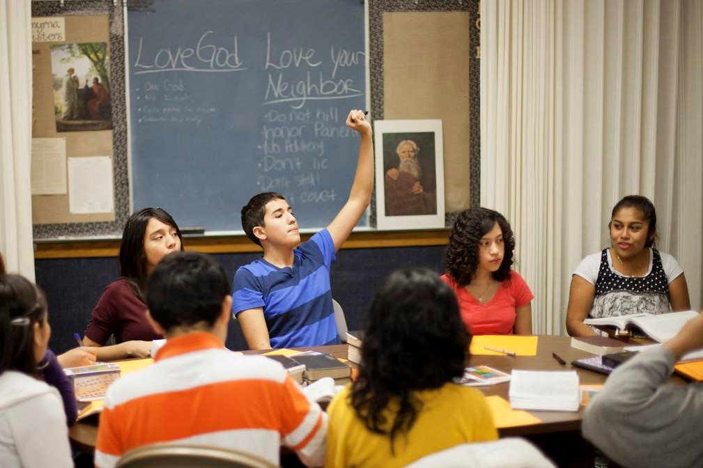

CURRENT JOB
Church of Jesus Christ of Latter-day Saints
Administrative Assistant in the Church Educational System, Seminaries and Institutes
Start: August 2022 - Rosario, Argentina
- Responsibilities:
- In the administrative aspect, I am in charge of organizing students in their corresponding classes (more than 40 different classes), uploading their attendance, readings, evaluations; I help the teachers assigned to them with the reports they need; print graduation certificates, analyze and complete credits and academic profiles, among other tasks.
- In the financial aspect, I am in charge of reporting card expenses to an internal platform, controlling budgets, refunds, tickets, etc.
- I also help the campus teachers with the elements they need for their teaching, such as blackboards, fiberboards, books, printing, technology, etc.
PAST JOBS
Autonomous - Teacher of private classes
Mathematics, Chemistry and Physics
From April 2021 to August 2022 - Rosario, Argentina
- Responsibilities:
- Give face-to-face and online classes with students of different ages, to prepare them for their exams.
- Solve their doubts and problems, propose activities.
- Didactic classes, with many examples and comparisons to facilitate learning.
Unitec-Bio S.A
Intern of the subject "Professional Practices" of the "Instituto Politécnico Superior" high school of Rosario, Laboratory analyst
July 2018 - Puerto General San Martin, Rosario, Argentina
- Responsibilities:
- Obtaining and analysis of fuel samples.
- Inform and report results.
- Sampling and handling of industrial and laboratory materials, tools and equipment.
- Activities aimed at research and development of more efficient fuels.